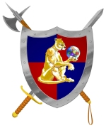

Cougaar Society Management, Analysis,
and Reporting Tool
To report bugs or make change requests, please visit the Cougaar bug tracking web site, at:
http://www.cougaar.org/bugs/
© Copyright 1997-2002 BBNT Solutions, LLC.
under sponsorship of the Defense Advanced Research Projects
Agency (DARPA).
This program is free software; you can redistribute it and/or modify
it under the terms of the Cougaar Open Source License as published by
DARPA on the Cougaar Open Source Website (http://www.cougaar.org).
THE COUGAAR SOFTWARE AND ANY DERIVATIVE SUPPLIED BY LICENSOR IS
PROVIDED "AS IS" WITHOUT WARRANTIES OF ANY KIND, WHETHER EXPRESS OR
IMPLIED, INCLUDING (BUT NOT LIMITED TO) ALL IMPLIED WARRANTIES OF
MERCHANTABILITY AND FITNESS FOR A PARTICULAR PURPOSE, AND WITHOUT
ANY WARRANTIES AS TO NON-INFRINGEMENT. IN NO EVENT SHALL COPYRIGHT
HOLDER BE LIABLE FOR ANY DIRECT, SPECIAL, INDIRECT OR CONSEQUENTIAL
DAMAGES WHATSOEVER RESULTING FROM LOSS OF USE OF DATA OR PROFITS,
TORTIOUS CONDUCT, ARISING OUT OF OR IN CONNECTION WITH THE USE OR
PERFORMANCE OF THE COUGAAR SOFTWARE.

Last modified: Mon Oct 29 15:30:24 EST 2001